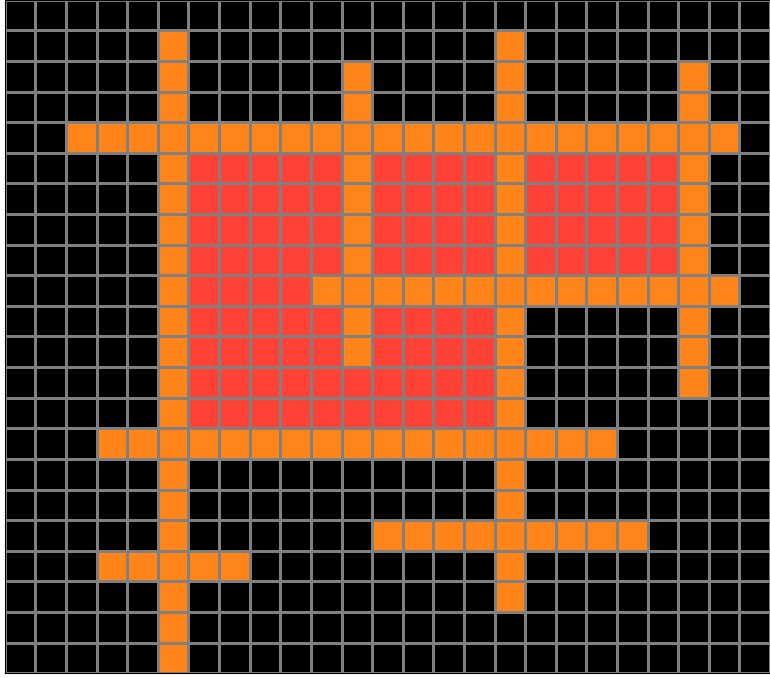
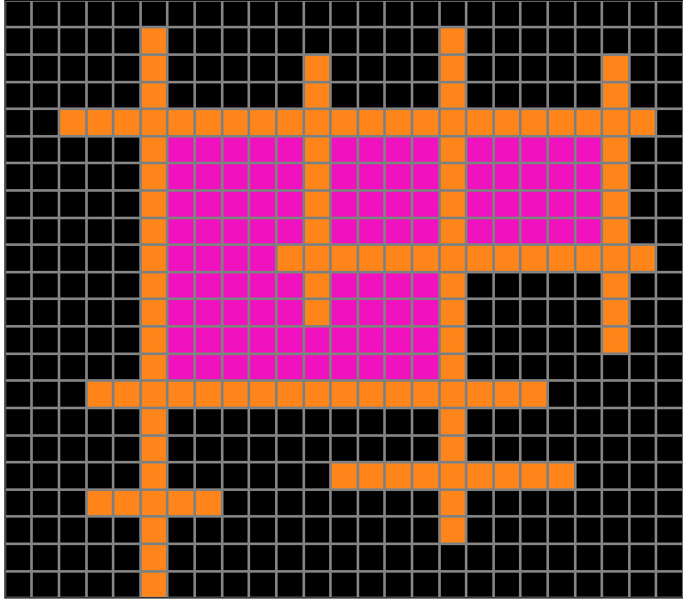
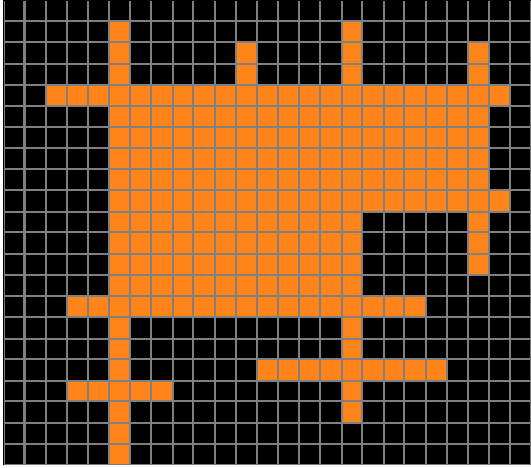
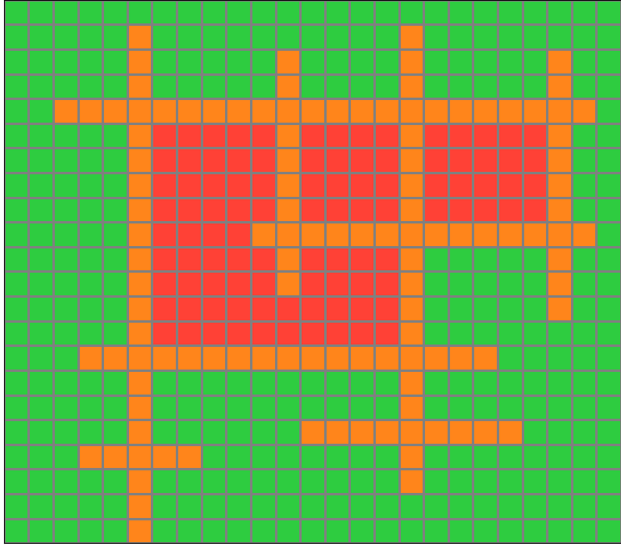

7b6016b9.json
Navigation
Train Examples


Test Example


Participant 1
Initial description: Copy the input exactly as it is. Then fill all bounded regions with red color. Then color green all other squares that are not bounded by the original design.
Final description: Copy the input exactly as it is. Then fill all bounded regions with red color. Then color green all other squares that are not bounded by the original design.

Participant 2
Initial description: fully closed spaces by the lines get filled with pinkish red
Final description: I thought the rule was to fill the closed spaced with pink. Not sure what else it would be



Participant 3
Initial description: Black squares change to green, enclosed spaces are changed to red-orange.
Final description: Black squares change to green, enclosed spaces are changed to red-orange.

Participant 4
Initial description: Fill in the connected parts of the graph in red.
Final description: Fill in the boxed in parts in red and make the rest of the graph green. ( don't change the color of the test input squares otherwise)


Participant 5
Initial description: The input grid has a set of several intersecting horizontal and vertical line segments. The lines may form one or more regions that are enclosed in a border formed by the lines. The output is the same grid and lines with the enclosed regions filled in red, and the remainder of the grid filled in green.
Final description: The input grid has a set of several intersecting horizontal and vertical line segments. The lines may form one or more regions that are enclosed in a border formed by the lines. The output is the same grid and lines with the enclosed regions filled in red, and the remainder of the grid filled in green.

Participant 6
Initial description: Flood fill the outer edges with green, then flood fill any remaining empty areas with red.
Final description: Flood fill the outer edges with green, then flood fill any remaining empty areas with red.

Participant 7
Initial description: I copied the orange pattern and filled the outside area in green and the interior areas in red.
Final description: I copied the orange pattern and filled the outside area in green and the interior areas in red.

Participant 8
Initial description: The non-black portion of the input is fully copied into the output. Any section fully contained in the interior of the original colored portion is colored red. Any section outside this colored portion (that is, anything that has an unobstructed path to the border) is colored green.
Final description: The non-black portion of the input is fully copied into the output. Any section fully contained in the interior of the original colored portion is colored red. Any section outside this colored portion (that is, anything that has an unobstructed path to the border) is colored green.

Participant 9
Initial description: Regardless of line color, the background should be made green. and any central areas that are cut off from background should be made red.
Final description: Regardless of line color, the background should be made green. and any central areas that are cut off from background should be made red.